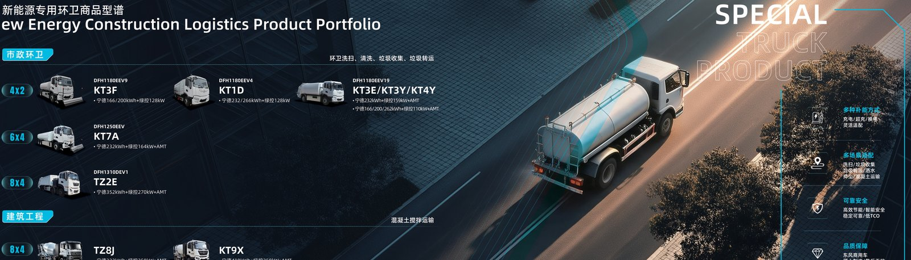

A parked electric truck is not idle metal, it is a mobile battery the grid will pay to use. EV truck demand response lets a fleet earn from peak shaving and grid balancing while the vehicles sit between shifts, and this guide shows the real revenue mechanics for a Dongfeng fleet.
Grid operators face two expensive problems: evening peak demand and sudden frequency drops. They solve both by calling on flexible load and storage to either reduce draw or inject power. A fleet of Dongfeng EV trucks, each carrying a 210 to 600 kWh CATL LFP pack, is a distributed battery bank. When the trucks are parked and plugged in, the aggregator can pull or hold energy to help the grid, and the program pays the fleet owner per kWh or per event.
The opportunity exists because the trucks are already parked for hours between duties. A delivery fleet that runs daytime loops has its vehicles sitting from early evening to dawn, and a yard tractor may sit most of the night. That idle capacity is exactly what the grid needs during the evening peak, so you are selling a resource you were already giving away for free.
Peak shaving means charging the trucks during cheap off-peak hours and, where the market allows, holding that energy or discharging to site load during the expensive evening peak. A KT5M electric cargo truck with its 282 kWh pack can shift enough energy to shave a depot's peak demand charge, which in many markets is the largest single line on the electricity bill. The saving is real even before any grid payment arrives.
Start with the demand charge, because it is the easiest win and needs no export licence. By simply scheduling charging into the off-peak window, a fleet cuts the peak kW it draws from the grid, and that alone can repay part of the charger investment. The grid-service payment on top is the upside that turns a cost centre into a profit line.
During a frequency-response event the aggregator may ask your fleet to either pause charging or discharge for 15 to 60 minutes. The table shows indicative payouts based on published pilot rates; confirm local figures with an aggregator before you model your business case.
| Service | Payment basis | Indicative rate | Per 10-truck fleet |
|---|---|---|---|
| Peak shaving | Per kWh shifted | $0.10 to 0.30 per kWh | $280 to 840 per event |
| Frequency response | Per kW available | $5 to 15 per kW per month | $14k to 42k per year |
| Capacity reserve | Per event call | $20 to 80 per call | $200 to 800 per call |
The KT5M electric cargo truck carries a 282 kWh pack, runs 1.1 to 1.6 kWh per km and carries a FOB price of $68k to $85k. A 10-truck depot in a responsive market could see $14k to $42k per year from frequency response alone, on top of the $0.13 to $0.32 per km energy saving versus diesel at $0.90 to $1.20 per L. The Thailand electric truck market has active pilot programs where commercial fleets already bid their parked capacity into the grid.
Stack the revenue streams and the picture improves further. The same ten KT5M trucks might earn frequency-response income every month, a capacity payment when called, and a peak-shaving saving on the depot bill, all while still doing their day job. None of these require the trucks to miss a delivery, because the grid only uses the spare capacity while they are parked.
Before an aggregator will enrol your fleet, prepare:
Operators worry that grid service wears the pack, but the 8-year or 4,500-cycle warranty and the LFP chemistry tolerate shallow, frequent cycles well. Held within the 25 to 35 deg C cooling window, a few extra cycles per week from balancing events barely move the SOH. The key is to cap depth of discharge so the trucks always leave the depot with enough range for their next duty.
Set a hard floor, for example never let the aggregator pull the pack below 30 percent, and a ceiling that leaves margin for the next shift. Dongfeng's battery management system supports these limits, and a written cap in the aggregator contract is what protects both your warranty and your operations. Done right, demand response is a small, controlled addition to the cycle count that the pack was designed to absorb.
Start with one depot and ten trucks, join a single frequency-response program, and measure both the payment and the operational friction for three months. Shaanxi Fenghan Trading Co., Ltd can supply Dongfeng EV trucks with telematics-ready architecture so your fleet qualifies for grid programs from day one.
Pick an aggregator with a track record in your region and a transparent settlement report, because the revenue only counts if you can see and audit it. After the pilot proves the numbers, scale to the rest of the fleet and consider adding a battery-swap rack so parked packs can serve the grid even while their trucks are out on duty.
The aggregator is your partner in this revenue, so choose on transparency and track record, not on the headline rate. Ask to see a sample settlement report before you sign, because the payment only counts if you can read and audit it. A good aggregator shows every event, the kWh or kW called, the duration and the cents paid, matched to your fleet by VIN. A vague monthly lump sum should raise a flag, because you cannot manage what you cannot see, and a fleet owner who cannot verify the revenue will never trust the program enough to scale it.
Also confirm the technical fit. The aggregator must speak to your charger controller and your telematics, and must respect the state-of-charge floor you set so trucks never leave short. Dongfeng's telematics-ready architecture helps here, but the contract still has to name the limits in writing. The right aggregator treats your operational needs as a constraint they design around, not as an afterthought they ignore when the grid calls.
Book the grid income as a credit against your energy and fleet cost, not as a separate mystery line, so the saving is visible to the people who approve the next truck order. When finance sees that a KT5M depot earned $14k to $42k a year from frequency response on top of the $0.13 to $0.32 per km fuel saving, the case for expanding the EV fleet gets much easier. Keep the settlement reports with the vehicle file so the revenue history travels with the trucks at resale and supports a higher price.
Explore demand-response-ready electric trucks on WhatsApp +86 153 1943 1311 or sales@fenghan-trade.com, and the export desk will spec a KT5M-based fleet for your grid market.
Ready to electrify your fleet? Contact Shaanxi Fenghan Trading — authorized Dongfeng EV truck exporter. WhatsApp: +86 153 1943 1311 | Email: sales@fenghan-trade.com | dongfengevtrucks.com
🌐 Our Network: Fenghan Trade (SAGMOTO/SHACMAN Truck Export) · SAGMOTO heavy duty diesel trucks